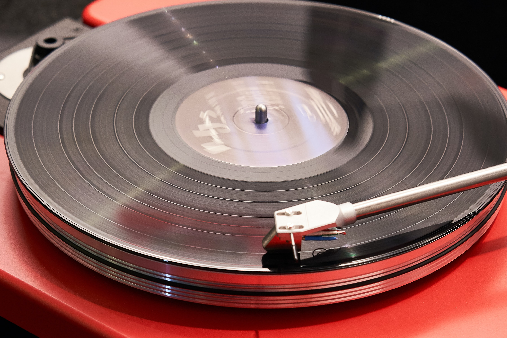

Products
Rega Planar 3/Elys 2
- Cartridge: Elys2 MM
- Phono preamp: No
- Motor: Belt Drive
- Tracking Force: 2g
- Dimensions: 11.7 x 44.7 x 36cm
- Price: $949.00
This mid-range model sports sleeker styling and an improved tonearm/cartridge combo that provides a decent jump in sound quality over its predecessor. Build quality is superb and it's clear that Rega has engineered every piece with precision and care.
More InfoRega Planar 1
- Cartridge: Rega Carbon MM
- Phono preamp: No
- Motor: Belt Drive
- Tracking Force: 2g
- Dimensions: 11.7 x 44.7 x 36cm
- Price: $827.00
The Planar 1 is around half the price of the Planar 3, so you might worry that it's half as good. Thankfully, nothing could be further from the truth. This best-selling record player is a significant step up from most entry-level decks and delivers stunning sound-per-pound, making it an attractive option for those on tighter budgets.
More InfoTechnics SL-1500C
- Cartridge: Yes
- Phono preamp: No
- Motor: Direct Drive
- Tracking Force: 2g
- Dimensions: 23 x 16 x 12cm
- Price: $1199.00
The Japanese brand's 2019 'entry-level' record player boasts a direct-drive motor with sophisticated speed management circuitry and a familiar S-shaped tonearm that tracks precisely. It's a beautifully-crafted piece of kit, with a built-in phono stage that ensures fuss-free set-up.
More InfoSony PS-LX310BT

- Cartridge: MM
- Phono preamp: Yes
- Motor: Belt Drive
- Tracking Force: 2g
- Dimensions: 10.8 x 43 x 36.7cm
- Price: $178.00
If you're on a tight budget, you can't beat the ease and simplicity of the Sony PS-LX310BT. It's a fussy name for a very unfussy record player; most buyers will be up and running within minutes of removing it from the box. There's a built-in photo stage and pre-fitted cartridge, so this is a bonafide plug 'n' play affair.
More Info